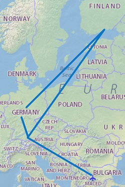
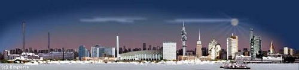

Европамоят континент
Кораб: 4 km
Автомобил: 26819 km
Влак: 3972 km
Кораб: 928 km
Общо: 61134 km
Градове: 52
Държави: 20
Континенти: 2
Командировка във Финландия
След Investor, започнах работа в чудесна Финландска компания – Comptel. Наложи се пътуване до Хелзинки и с Луфтханза през Мюнхен, кацнах в скования от сняг и лед град.

Полет София - Мюнхен - Хелзинки - Франкфурт - София
Денят през зимата е кратък, става светло към 9 и се стъмва малко след 4. Студено е, но финландците са корави хора и не ми изглеждаше това да им пречи. Децата им играят навън, карат кънки, забавляват се. Чак след минус 20 се прибират на топло и улиците опустяват.
Хелзинки

Забелязах, че пият много кафе. Яде се предимно сьомга и еленско месо. Пият си като руснаци, по кротко изглеждат, но като количества може и да е повече.
На пристанището имаше стоварена планина въглища и ТЕЦ-овете бяха на пълна мощност. В офиса си ходеха по къс ръкав, докато аз бях с дебел пуловер.